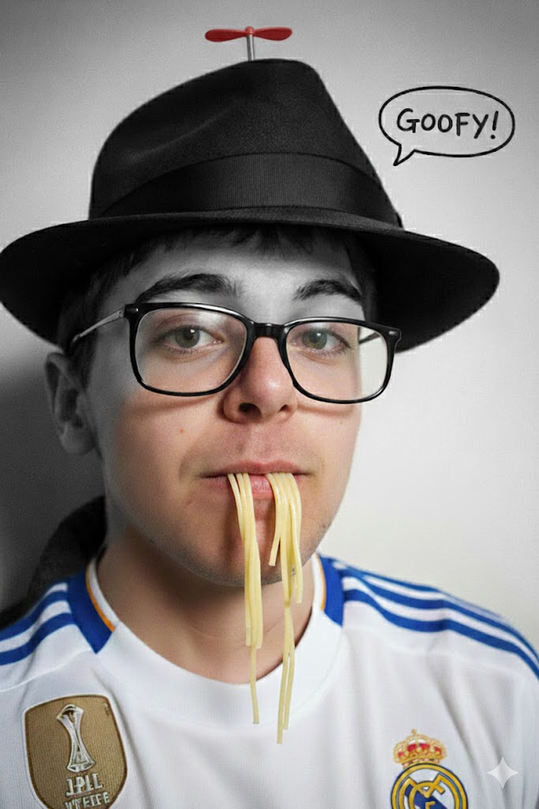

Ételeink


A kedves tulajdonosunk
Balázs Badzsó éttermünk alapítója és lelke. Szenvedélye a főzés és a vendégek boldoggá tétele. Több éves tapasztalattal és kreatív receptjeivel gondoskodik róla, hogy minden vendég különleges élménnyel távozzon.